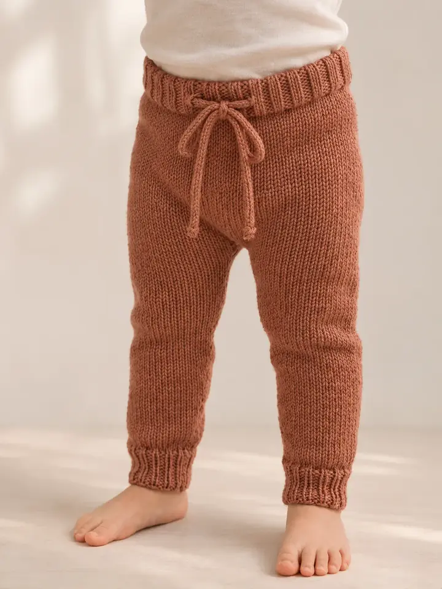
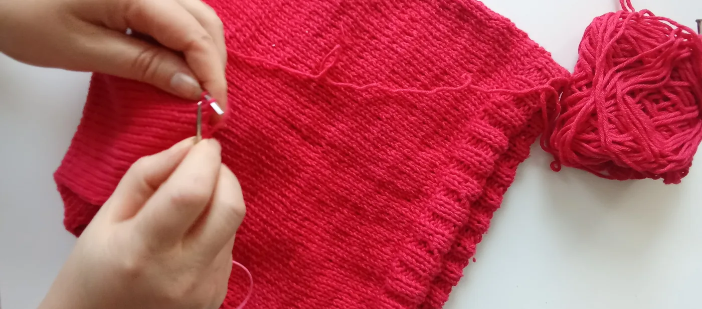
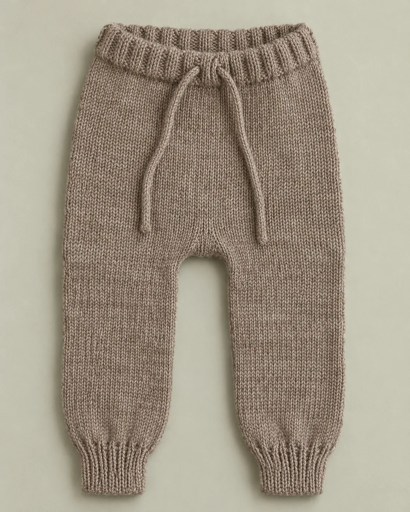
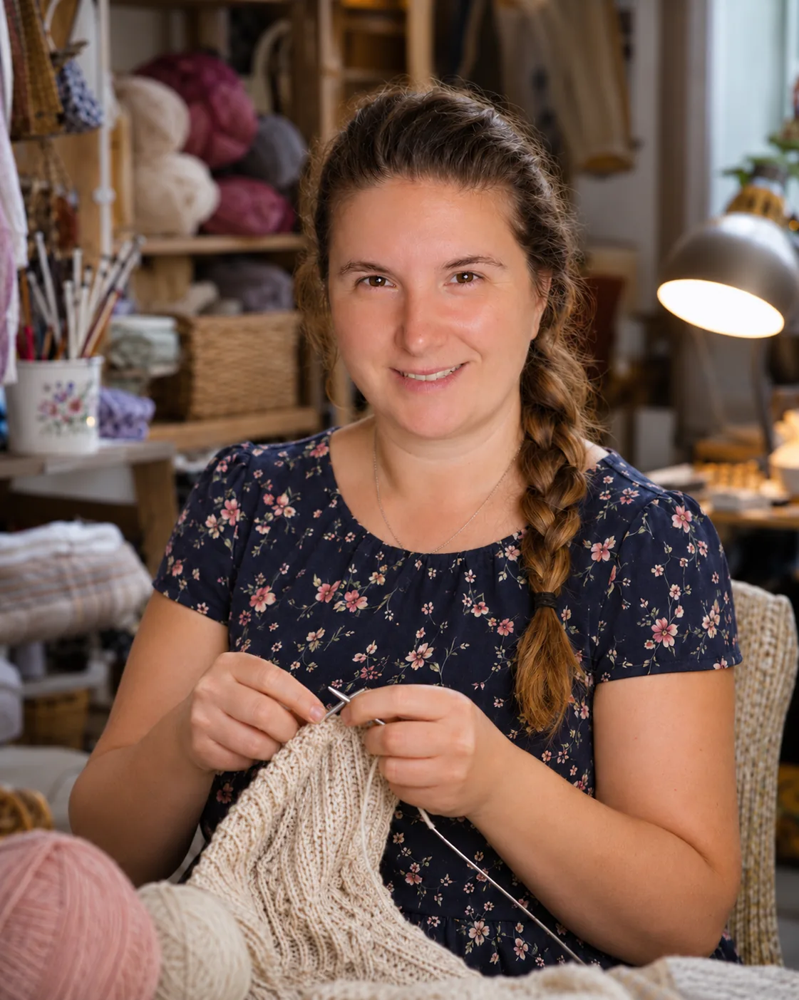
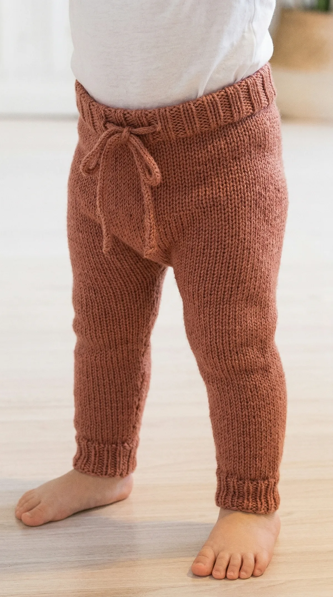

Вязаные вещи для детей
Цвет, пряжу, размер и стоимость согласуем до начала работы

Для родителей
основной товар Натальи рассчитан на этот возраст
до начала работы обсуждаются размер и мерки
пряжа выбирается после обсуждения условий носки
пожелания согласуются с заказчиком
важную дату нужно сообщить до согласования заказа
Результат обсуждения
До начала вязания вы обсудите цвет, пряжу, размер, стоимость и доставку
— пожелания по цвету определены до начала работы
— манжеты отворачиваются, а пуговицы переставляются по мере роста ребёнка
— материал выбирается с учётом условий носки
— стоимость, срок и порядок оплаты фиксируются письменно
— готовый заказ передаётся доставкой
Как проходит заказ

напишите в сообщения сообщества ВКонтакте, нужна ли готовая вещь или индивидуальный заказ и для кого она предназначена
согласуйте размер, цвет и натуральную пряжу: 100% меринос, меринос с хлопком или другой вид натуральной пряжи
мастер подтверждает детали, рассчитывает окончательную стоимость по выбранному размеру и сообщает срок; способ оплаты согласовывается с мастером, для индивидуального заказа вносится предоплата 100%
изготовление занимает около 10 дней в зависимости от загруженности; перед отправкой мастер присылает фотографии изделия
бесплатный самовывоз либо доставка по России Почтой России или СДЭК; стоимость доставки согласовывается отдельно
Ассортимент
по наличию и на заказ
по наличию и на заказ
по наличию и на заказ
по наличию и на заказ
основной товар Натальи


О мастере
Наталья — начинающий мастер по вязанию детских вещей. Основной товар — бесшовные штанишки из натуральной пряжи.
подтверждённая особенность штанишек
особенность стандартных штанишек мастера
материал для основного товара
до работы фиксируются цвет, размер, материал, стоимость и срок
Условия индивидуального заказа
До согласования

Первый шаг
Расскажите, для кого нужны штанишки, и назовите пожелания по цвету и размеру
В холодный сезон заказы выполняются по очереди — обсудите штанишки заранее
Детские бесшовные вязаные штанишки на заказ